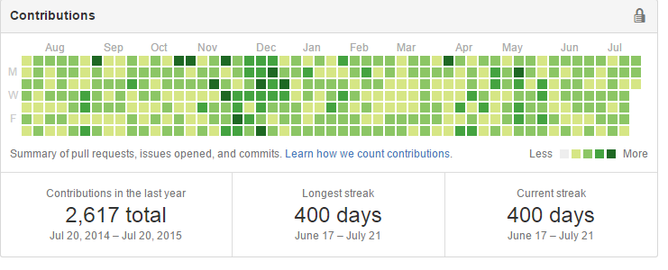

UNet 0x01: 网络连接的建立
看到标题后，没接触过的朋友脑中可能会闪现出这样一个问题： UNet 是什么 ? 其实它是 Unity ...
2015-08-06 16:43
by
Rocky Lai
好玩：如何把 Github Contributions 填充满
先看效果：

我们要使用 RockStar 这个 python 工具来实现这个效果 ...
2015-07-21 12:50
by
Rocky Lai
瞎聊 Unity Shader 系列之十一：深度缓存
第二节 渲染管线 中提到了 Frame Buffer, 这个是用来存储帧位图的数据存储区域 ...
2015-06-09 15:17
by
Rocky Lai
瞎聊 Unity Shader 系列之十：数据的标签：语义绑定
这节内容跟 渲染管线 内容关系比较紧密，建议先了解渲染管线的整个流程。
我们知道渲染管线整个流水线都有数据的输入输出，这样就存在几个问题 ...
2015-05-14 15:53
by
Rocky Lai
瞎聊 Unity Shader 系列之九：用来包装变量的 Properties
为了像其他程序语言一样重用代码，Shaderlab 把可变部分提取出来，集中放到一个区域去。这个区域就是 初始 ...
2015-05-08 14:03
by
Rocky Lai
瞎聊 Unity Shader 系列之七：究竟谁先被渲染？
这节的问题: 假设有很多对象需要渲染，而你想自己指定这些对象被渲染的顺序的话应该怎么做？
先上答案：使用 Subshader ...
2015-05-06 16:05
by
Rocky Lai